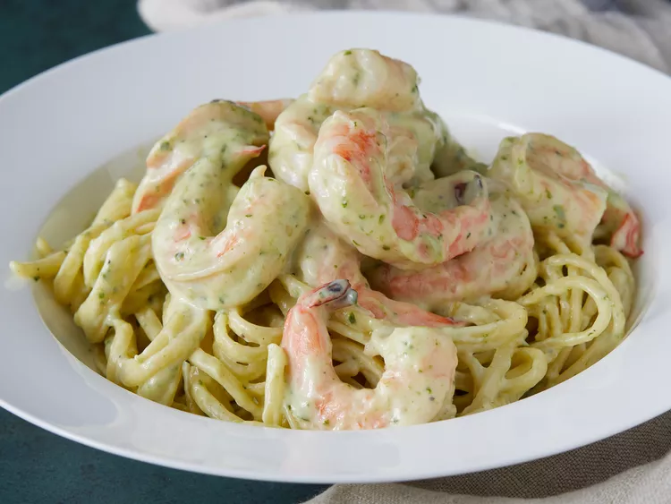

Pesto Shrimp

This dish features linguine tossed with shrimp cooked in a rich, creamy sauce flavored with butter, heavy cream, Parmesan cheese, and pesto—ready in about 30 minutes and serving 8 people
Ingredients
- linguine pasta
- butter
- heavy cream
- black pepper
- parmesan cheese
- pesto
- large shrimp
Steps
- Cook the pasta until tender. At the same time boil the shrimp
- melt the butter in a skillet over medium. Stir in the cream and pepper as it cooks
- Stir the parmesan cheese into the sauce
- add the pasta and shrimp and serve